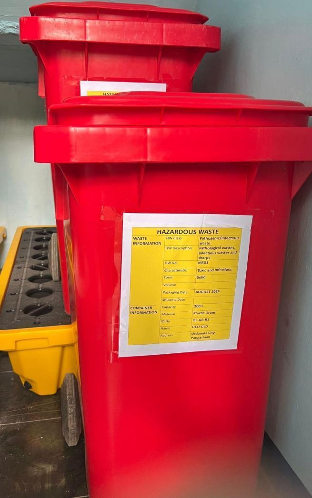
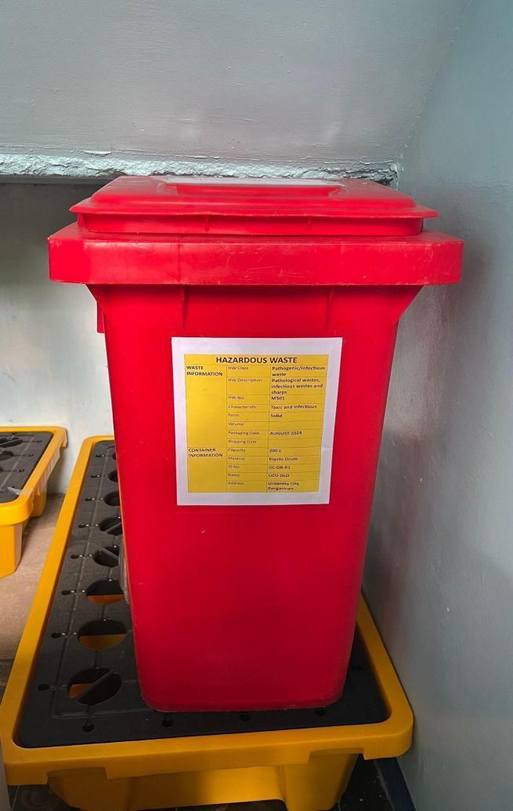
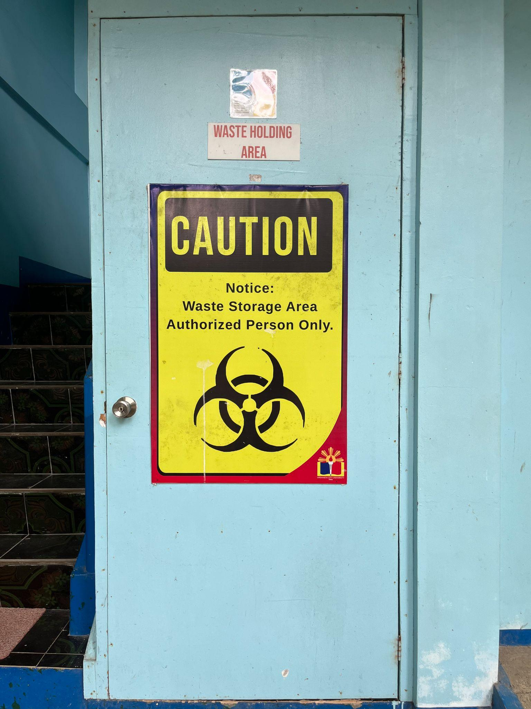

| Laboratory Hazardous Waste Storage Setup | |
|---|---|
|
 Durable toxic waste containers stored in a designated containment cabinet
|
 Leak-proof sealed containers properly marked for chemical hazardous waste collection
|
| Laboratory Toxic Waste | |
At Urdaneta City University (UCU), the management of toxic and hazardous waste is conducted through strict, regulated, and environmentally responsible procedures, in alignment with the UI GreenMetric World University Rankings, particularly under the Waste (WS) and Setting & Infrastructure (SI) indicators. The University prioritizes the safe handling, storage, and disposal of hazardous materials to ensure the protection of both the environment and public health.
Toxic waste generated on campus is securely stored in designated, clearly labeled, and leak-proof containers designed to prevent spills, leaks, and accidental contamination. These containers are strategically placed and regularly monitored to ensure compliance with safety protocols and environmental standards. Proper segregation of hazardous materials from other waste streams is strictly enforced to minimize risks and maintain a safe campus environment.
To ensure responsible disposal, UCU partners with a licensed private hazardous waste management company that specializes in the collection, transport, and treatment of toxic materials. This accredited third-party service provider ensures that all hazardous waste is transported to treatment, storage, and disposal facilities (TSDs), where it undergoes safe and compliant processing in accordance with national environmental regulations and international safety standards.
This systematic approach demonstrates UCU’s adherence to best practices in hazardous waste management, including regulatory compliance, risk mitigation, and environmental protection. By outsourcing disposal to certified professionals, the University ensures that toxic waste is handled with the highest level of expertise and accountability, reducing potential environmental and health hazards.
Additional evidence link (i.e., for videos, more images, or other files that are not included in this file):
| Certified Hazardous Waste Collection and Transport Operations |
|---|
|
 Licensed hazardous waste transport vehicle executing secure transfer of segregated campus toxic waste
|